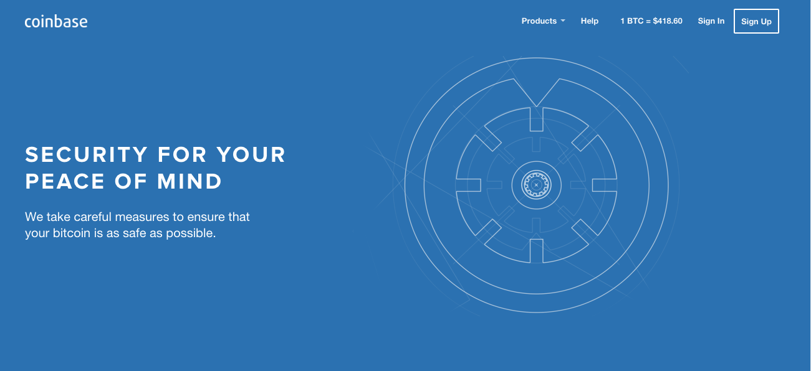
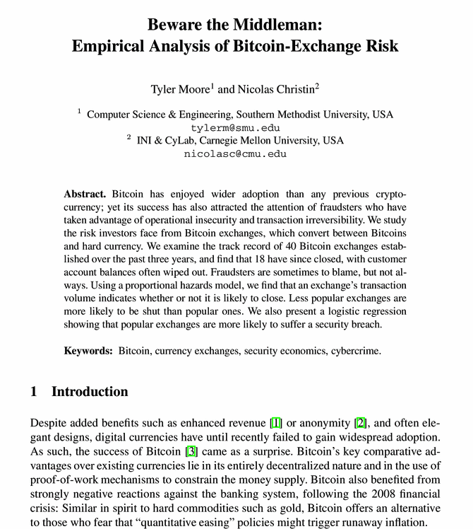
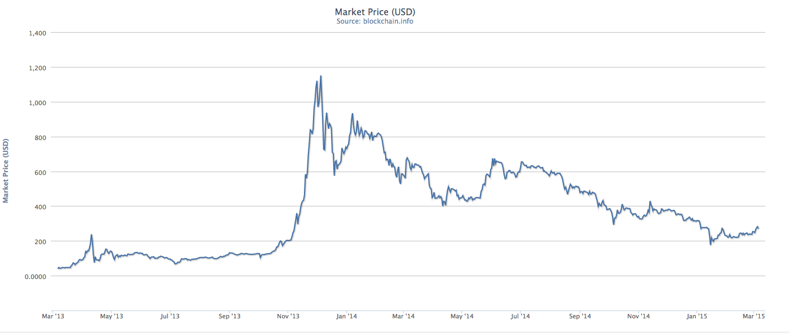

Here is an excerpt from a research paper I've written on Bitcoin.
Online and offline storage of digital currency present conflicting risks for a Bitcoin exchange. While Bitcoins stored on online devices are continually vulnerable to malware and other network-based attacks, offline reserves are endangered on access, as transferring Bitcoins requires the exposure of otherwise encrypted and secured private keys. In particular, fluctuations in customer demand for deposited Bitcoin require exchanges to periodically refill online storage systems with offline reserves. This raises the natural question of what upper limit on online reserves minimizes losses due to theft over time.
In this paper, we investigate this optimization problem, developing a model that predicts the optimal ceiling on online reserves, given average rates of deposits, withdrawals, and theft. We evaluate our theory with an event driven simulation of the setup, and find that our equation yields a numerical value for the threshold that differs by less than 2% from empirical results. We conclude by considering open questions regarding more complex storage architectures.
On January 5, 2015, Bitstamp, the world's third largest Bitcoin exchange, abruptly suspended operations. The UK-based service had detected theft of 19,000 Bitcoins, worth $5.1 million at the time of press release. In response to terrified customers and media frenzy, Bitstamp's CEO issued the following public statement: "This breach represents a small fraction of Bitstamp's total bitcoin reserves, the overwhelming majority of which are held in secure offline cold storage systems. We would like to reassure all Bitstamp customers that their balances...will not be affected and will be honored in full."

Though unperturbed by such incidents to date, Bitstamp's American counterpart — the San Francisco-based wallet and exchange service Coinbase — assures a clientele spanning 24 countries:
Sleep Well Knowing Your Bitcoin Are Safe
Up to 97% of bitcoin is stored totally offline, in geographically distributed safe deposit boxes and physical vaults.
The public fears these statements aim to placate are not, in fact, unfounded. Bitcoin theft is alarmingly prevalent, and impacts both businesses managing vast reserves and individuals holding small quantities of bitcoin on their personal computers. The mechanisms of theft are numerous. Unsuspecting smartphone users often fall victim to malicious Android applications advertised as Bitcoin wallets. Bitcoins stored on devices connected to the Internet are frequently compromised by various forms of malware, which extract and transmit the private keys used to authorize Bitcoin transactions. Patrons of well-known exchanges, including Coinbase, often report lower-than-expected account balances, having been victimized by hackers who acquired their login credentials. And major services, such as Bitstamp, periodically lose significant holdings of bitcoin to security exploits in client-facing software; in some cases, the responsible parties include company insiders.
Both Bitstamp and Coinbase's public assertions also allude to a second, critical aspect of Bitcoin management, and the central focus of this study — the concept of offline and online storage. Whereas storing bitcoins on devices connected to the Internet (online, or "hot", storage) is traditionally discouraged, as it entails exposure to malware contracted through the web and other network-based attacks, offline ("cold") storage involves its own hazards, specifically, the danger of compromise on access, by insiders. For a Bitcoin exchange or banking service that must consistently meet customer demand, this results in a logistic dilemma. Storing too many bitcoins in hot storage poses the obvious problem of increased losses due to recurrent, network-based theft. But storing fewer bitcoins online necessitates frequent access of cold storage to meet fluctuations in customer demand. This in turn defeats the functional purpose of cold storage, which is to exchange liquidity for increased security. In particular, frequent access increases the probability of cold storage theft. This second risk has been underemphasized in the current literature, to the point that cold storage is increasingly portrayed as the definitive solution to all security problems involved in Bitcoin management.
In this paper, we debunk the assumption that the only benefit to storing bitcoins in hot storage is availability, by demonstrating that maintaining some optimal value of online reserves in fact minimizes losses due to theft. Our quantitative analysis confirms the intuitive idea that storing too few bitcoins in hot storage results in an arrangement that exposes the bulk of an organization's reserves to a small probability of theft, a combination which — given the track record of Bitcoin exchanges — proves catastrophic in the long run.
The heightened significance we attach to cold storage theft is motivated by an empirical study of 40 major Bitcoin exchanges operational at some point before January 2013, which found that 18 had ultimately shutdown, at least 5 of which had failed to reimburse their customers. In particular, while more popular exchanges were less likely to shutdown, the likelihood of a security breach was positively correlated with the transaction volume handled by the exchange. Though the details of these thefts are generally unknown, several explicit cases of cold wallets being emptied have been documented.

Given this evidence, we adopt a different approach to Bitcoin theft. While previous work has focused on the cryptographic layer, and reducing the incidence of theft (see Section 4), we instead investigate the optimal utilization of existing security systems. Our setup consists of a Bitcoin exchange that must service deposits and withdrawal requests, while mitigating losses due to unavoidable, periodic theft of its hot and cold storage systems. Specifically, we stipulate that cold storage theft occurs with a fixed probability on access, while times to hot storage theft are exponentially distributed. We model deposits and withdrawals, on the other hand, as Poisson processes. We then investigate the behavior of our system over a long time interval [0, T], tracking the net balance of the exchange through internal and external events.
Notably, we propose a series of models that quantify the performance of various subsystems of our setup; namely, 1) net income into the exchange, 2) hot storage with no offline backup, and 3) the full dual storage system. Our culminating result is a formula for the expected net value of our exchange after T hours. This function is then numerically optimized, yielding a value for an optimal ceiling on online reserves which differs by less than 2% from empirical results. We conclude by discussing more complex storage architectures and their potential advantages.
Mitigating losses due to Bitcoin theft is an undertaking of crucial importance on several levels. Firstly, Bitcoin's success as an emerging currency and alternative payment system is critically dependent on public trust in its institutions. Public optimism about Bitcoin determines its current dollar valuation, motivates entrepreneurs to build the tools that make Bitcoin useful for the general person, incentivizes developers to contribute improvements to the Bitcoin protocol, and spurs investment into security and privacy research. But public opinion is also particularly sensitive to news of heists and shutdowns, and to stories of major exchanges going bankrupt. As a result, Bitcoin theft not only affects its immediate victims — businesses and their customers, but hurts the Bitcoin community at large and hampers greater adoption of the currency.

A key economic principle is also at play. Losses due to theft experienced by Bitcoin storage and exchange services are subsidized by customers, through increased exchange fees and (in the future) higher insurance premiums or lower interest rates. This in turn is a disincentive for customers to store (i.e. invest) their savings in Bitcoin services. One of the key factors driving Bitcoin's growth today is that it reduces frictions involved in traditional payment mechanisms, by cutting out intermediary parties and automating transactions. These benefits are nullified, however, if Bitcoin remains a high-risk investment.